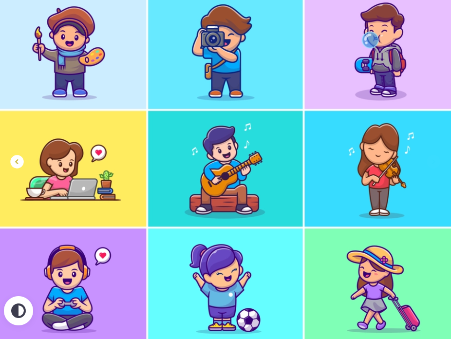

Hobbies
Ik heb meerdere dingen die ik graag in mijn vrije tijd doe.Voorbeelden van deze dingen zijn sporten,lezen en koken/bakken.Ik sport het liefst ongeveer 3 a 4 keer per week.Ik ga dan meestal naar een sportschool dichtbij mijn huis.Lezen doe ik vrijwel overal, bijvoorbeeld onderweg naar huis van school of tijdens het sporten.Ik heb geen vaste kook/bak routine, omdat ik meestal alleen kook/bak wanneer ik er zin in heb of wanneer iemand mij vraagt om voor hem/haar iets te maken.
